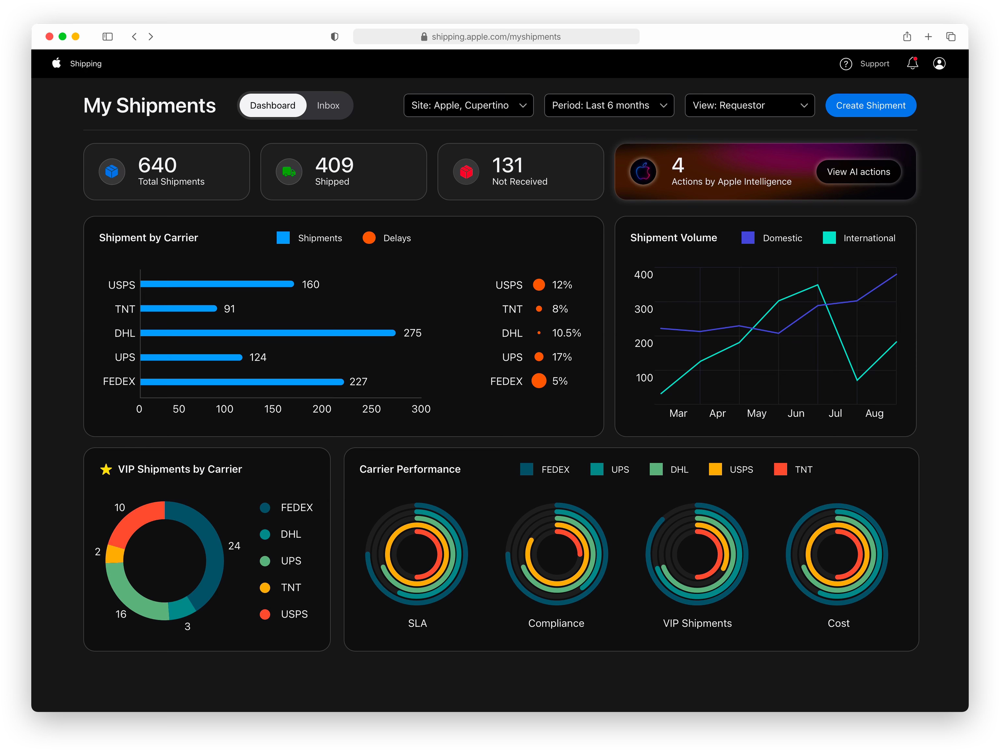
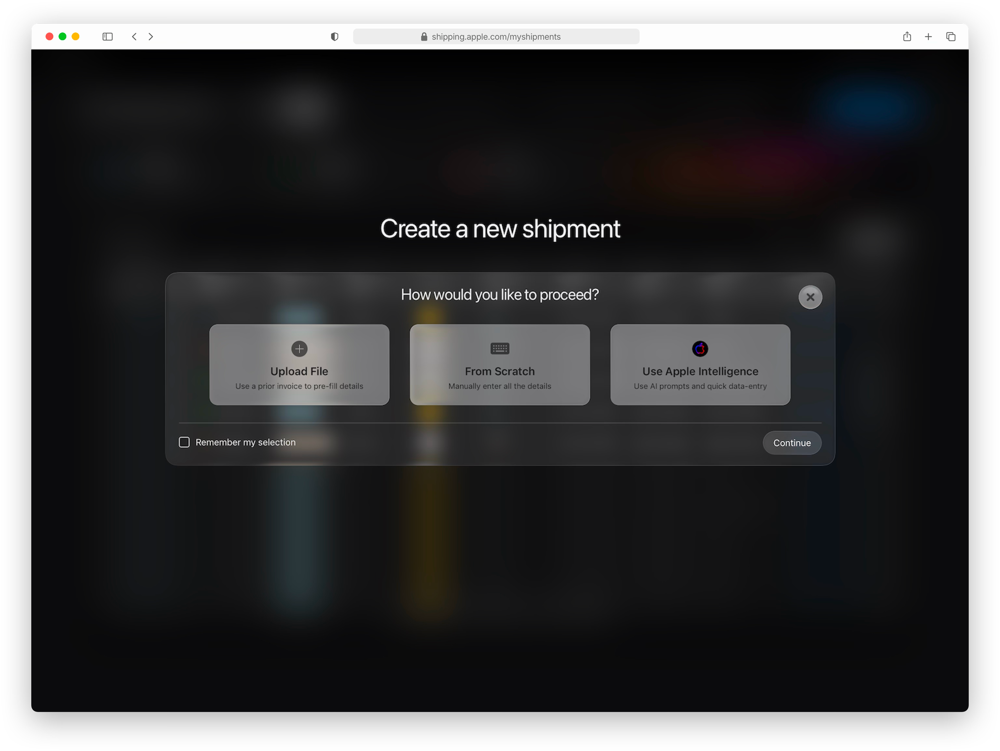
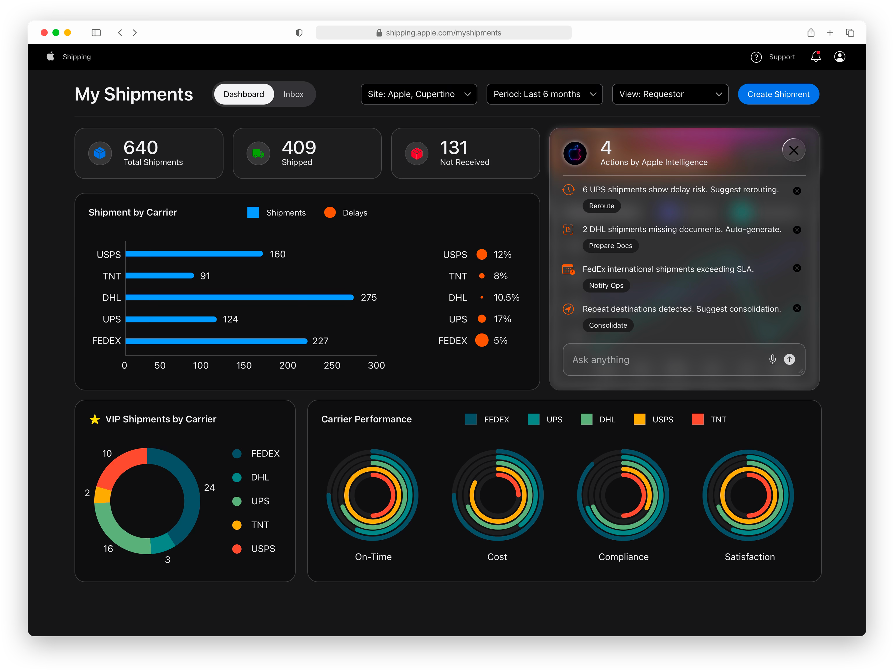
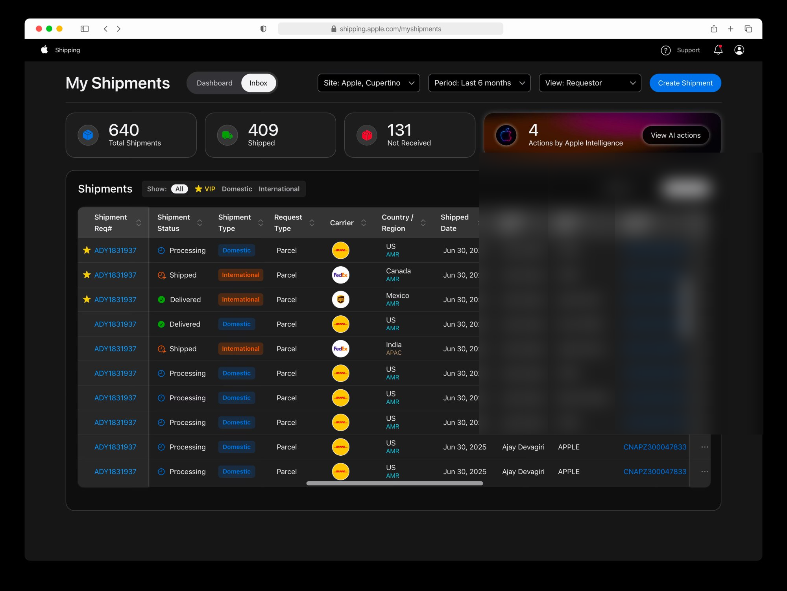
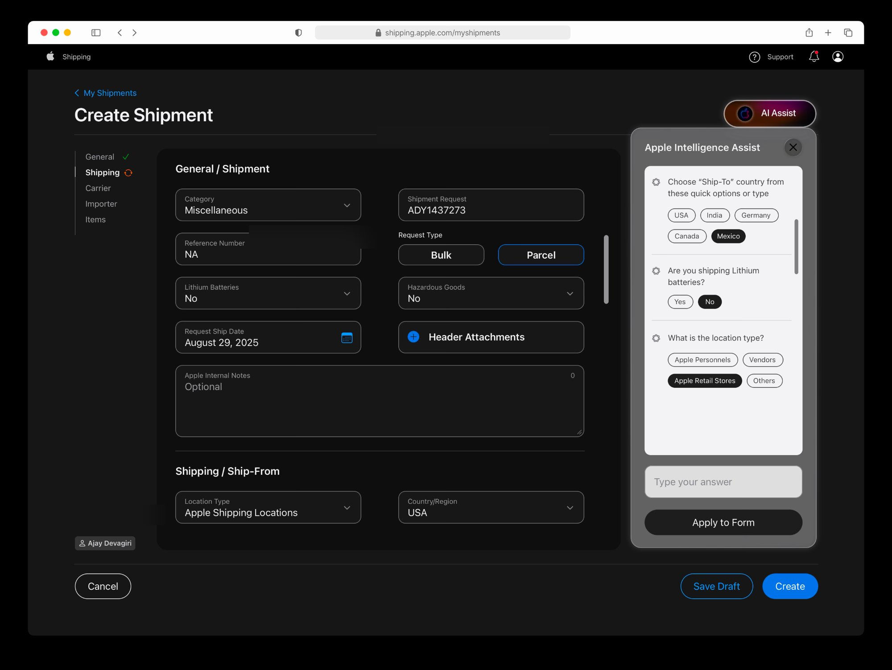

Redesigning internal shipping operations through AI-powered workflows built for trust, transparency, and human oversight.
Apple's internal logistics managers were creating and tracking shipments through a fragmented, manual workflow. No AI assistance, no proactive alerts, no consolidation of action items — just volume and complexity managed by hand.
The challenge wasn't just speed. It was trust. Introducing AI into a high-stakes operational workflow means every suggestion has to be explainable, every automated action has to be reversible, and managers have to feel in control — not replaced.
Shadowed the actual workflow — every manual step, every workaround, every moment of friction. The goal was to understand the cognitive load before designing any AI intervention.
Every AI suggestion is surfaced as a named, explainable action — not a silent automation. Managers see what the system detected, why it matters, and can accept, modify, or dismiss with one tap.
The dashboard surfaces carrier performance, SLA risk, and delay patterns in real time. Information that previously required manual cross-referencing became ambient and actionable.
The design-to-production workflow itself was AI-augmented — moving from brief to Apple-standard React in under two weeks without compromising engineering quality.
The AI engine could have applied corrections automatically — rerouting a delayed shipment, consolidating duplicate destinations, generating missing documents — without asking. Faster, fewer clicks.
We chose not to. Every AI action is surfaced as an explicit suggestion with a one-tap confirmation. The tradeoff is a slightly longer interaction in exchange for something more important: managers stay in the loop and trust doesn't erode. In a high-stakes internal ops tool, a single unexpected automated action could cost more in lost trust than it ever saved in seconds.
The early direction was to embed AI assistance directly into the existing Create Shipment form — inline suggestions, smart autofill, predictive field completion. It felt like the obvious integration point.
The problem: it tangled two different mental models in one surface. We separated them. The three-path entry modal — Upload File, From Scratch, Use Apple Intelligence — lets users choose their mode before entering the form, keeping each path clean. Users who don't want AI aren't interrupted by it. Users who do get a fully conversational experience without the friction of a traditional form fighting for the same space.

Dashboard overview — carrier performance, volume trends, and AI action surface



Inbox view — high-density table with VIP flags, status badges, and multi-filter architecture

Create Shipment + AI Assist — conversational data entry alongside the traditional form
The complete case study — research synthesis, design iterations, AI action framework, and engineering collaboration — is available in a live walkthrough.
Request a Walkthrough →